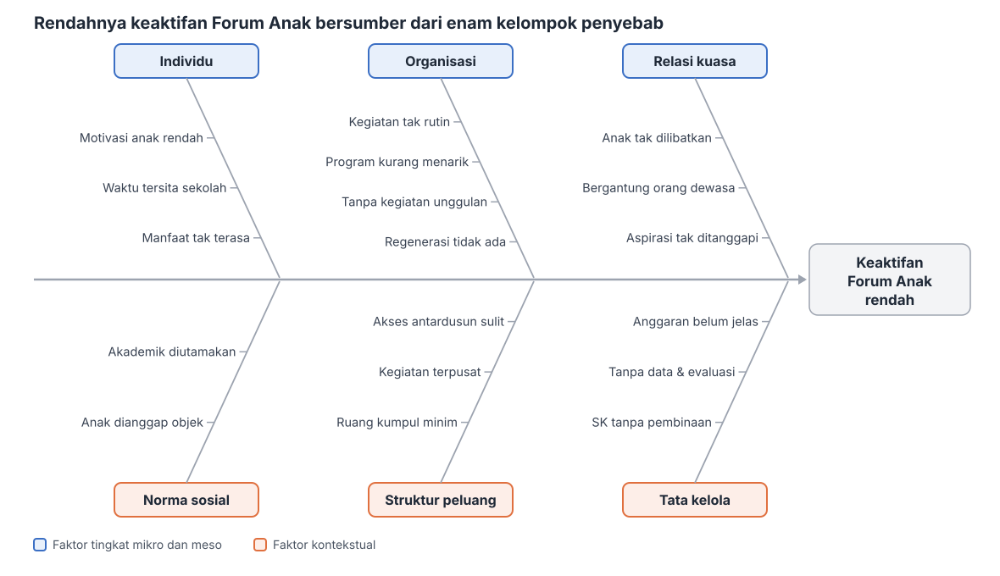

ASESMEN FORUM ANAK · FISHBONE 1/3
ANALISIS FISHBONE
7/10
MAP
→
APKL
→
USG
→
Fishbone
Masalah utama (kepala ikan):
rendahnya keaktifan Forum Anak Desa Kejapanan.
Kategori penyebab mengikuti pembagian faktor tingkat mikro dan meso serta faktor kontekstual (Pambudi, 2026).

Sumber: Pambudi, K. S. (2026).
Asesmen dan analisis urgensi masalah
[PowerPoint slides].